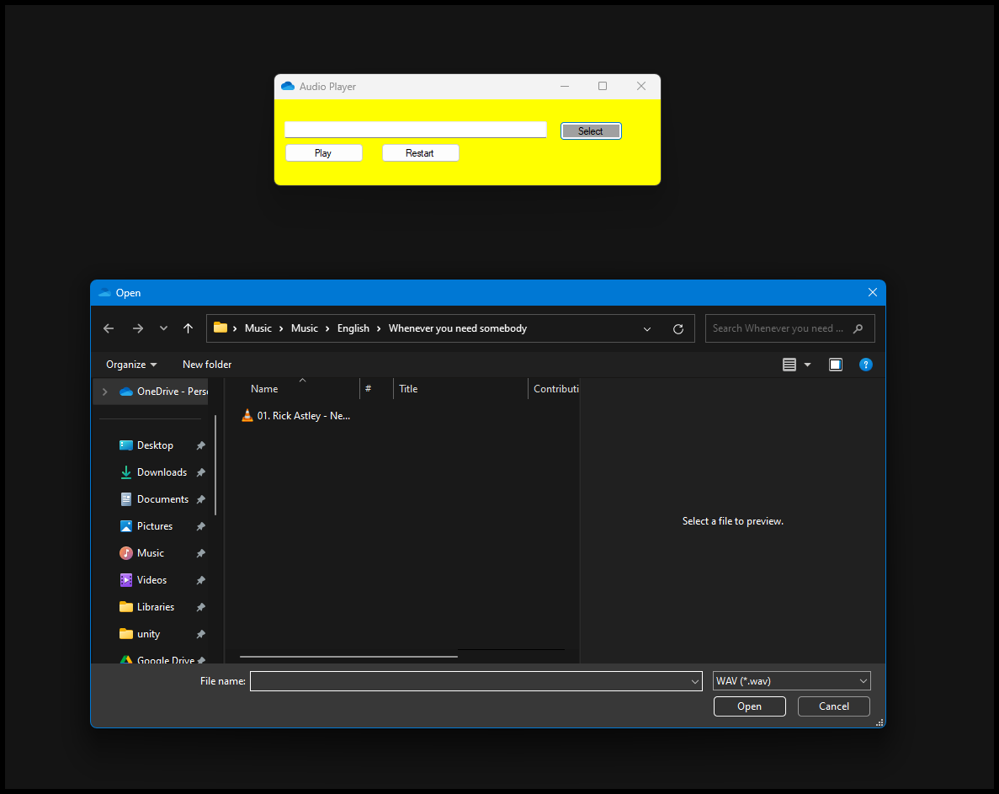

Once upon a time, there was a king named Bob. King Bob ruled the kingdom of Boredom, where nothing exciting ever happened. One day, a terrible drought hit the kingdom. People were thirsty, crops were dead, and everyone was grumpy. King Bob, being a bit lazy, decided to fix the problem without too much hassle. He heard about a magical spring guarded by a dragon in the Weird Woods. So, he grabbed his royal snack pack and set off. When he reached the Weird Woods, he met the dragon, who was surprisingly polite. The dragon said, “I’m tired of guarding this spring. No one ever visits. If you can make me laugh, I’ll let you take the water.” King Bob, thinking quickly, pulled out a rubber chicken from his snack pack and did a silly dance. The dragon laughed so hard he snorted fire. “Alright, alright! Take the water and go,” the dragon said, wiping away tears of laughter. King Bob filled his flask with the magical water and hurried back to Boredom. He poured the water over the fields, and instantly, the crops grew, and rivers flowed again. The people cheered and crowned King Bob “The Funniest Hero.” From then on, Boredom was never boring again, and King Bob was known for his jokes and his knack for solving problems with a laugh.
using System;
using System.Collections.Generic;
using System.Linq;
using System.Threading.Tasks;
using System.Windows.Forms;
namespace Audio_Player
{
internal static class Program
{
/// <summary>
/// The main entry point for the application.
/// </summary>
[STAThread]
static void Main()
{
Application.EnableVisualStyles();
Application.SetCompatibleTextRenderingDefault(false);
Application.Run(new Form1());
}
}
}
using System;
using System.Collections.Generic;
using System.ComponentModel;
using System.Data;
using System.Drawing;
using System.Linq;
using System.Media;
using System.Text;
using System.Threading.Tasks;
using System.Windows.Forms;
namespace Audio_Player
{
public partial class Form1 : Form
{
public SoundPlayer player;
public Form1()
{
InitializeComponent();
player = new SoundPlayer();
}
private void Form1_Load(object sender, EventArgs e)
{
}
private void button1_Click(object sender, EventArgs e)
{
using (OpenFileDialog ofd = new OpenFileDialog() { Filter = "WAV|*.wav" })
{
if(ofd.ShowDialog() == DialogResult.OK)
{
textBox1.Text = ofd.FileName;
}
}
}
private void play_Click(object sender, EventArgs e)
{
player.SoundLocation = textBox1.Text;
player.Play();
}
private void pause_Click(object sender, EventArgs e)
{
player.Stop();
player.SoundLocation = textBox1.Text;
player.Play();
}
private void axWindowsMediaPlayer1_Enter(object sender, EventArgs e)
{
}
}
}
The Program's Image
The Program's File Dialoge